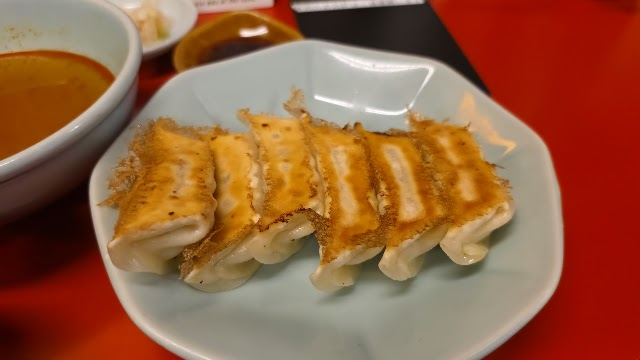
| 営業時間 | 月・火・水・木・金・土・日 11:00〜20:00 |
|---|---|
| 定休日 | なし(要最終確認) |
| 住所 | 栃木県宇都宮市馬場通り４丁目２−３ |
| 予約 | 要確認 — ☎ 028-622-5789 ／ 公式サイト |
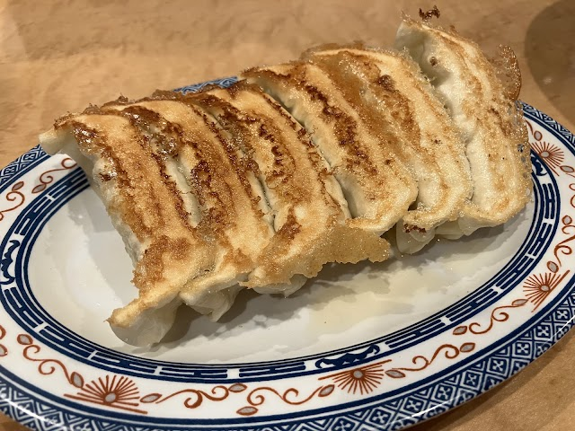
| 営業時間 | 月〜金11:30〜14:30、土日11:30〜17:00（売切れ次第終了） |
|---|---|
| 定休日 | 火曜・水曜 |
| 住所 | 栃木県宇都宮市馬場通り４丁目３−１ |
| 予約 | 要確認 — ☎ 028-622-7058 ／ 公式サイト |
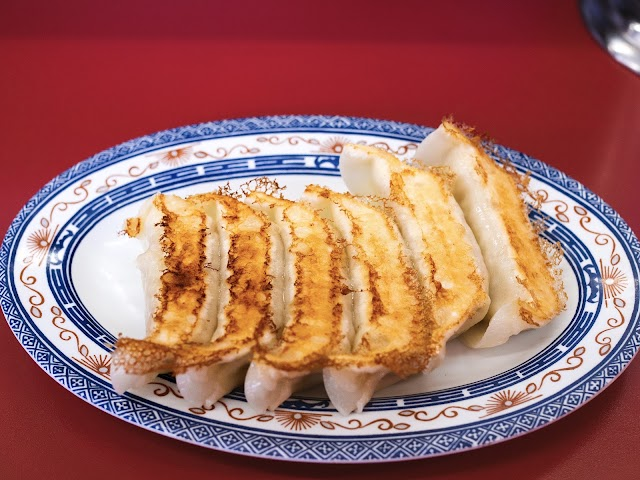
| 営業時間 | 月・木・金・土・日 11:00〜17:00 |
|---|---|
| 定休日 | 火・水曜 |
| 住所 | 栃木県宇都宮市滝の原１丁目３−３９ |
| 予約 | 要確認 — ☎ 028-636-7888 ／ 公式サイト |
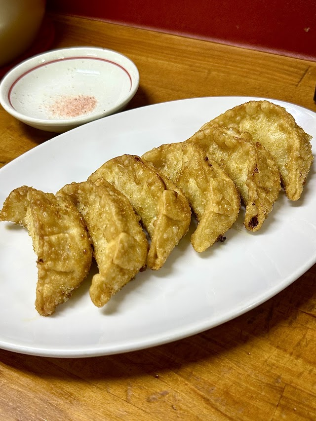
| 営業時間 | 月・水・木・金・土・日 11:30〜20:00 |
|---|---|
| 定休日 | 火曜 |
| 住所 | 栃木県宇都宮市本町１−２４ |
| 予約 | 要確認 — ☎ 028-622-4024 ／ 公式サイト |
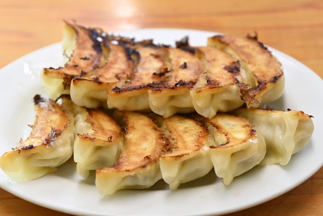
| 営業時間 | 火・水・木・金 11:15〜13:45, 16:30〜19:45 ／ 土 11:15〜13:45 |
|---|---|
| 定休日 | 月・日曜 |
| 住所 | 栃木県宇都宮市宝木町２丁目８６４−４ こうらく |
| 予約 | 要確認 — ☎ 028-652-6565 ／ 公式サイト |
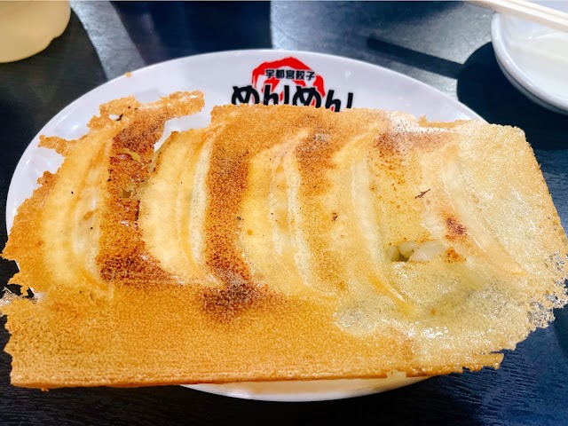
| 営業時間 | 火・水・木・金 11:30〜14:15, 17:00〜20:45 ／ 土 11:00〜14:15, 17:00〜20:45 ／ 日 11:00〜14:15, 17:00〜19:45 |
|---|---|
| 定休日 | 月曜 |
| 住所 | 栃木県宇都宮市二荒町５−１１ |
| 予約 | 要確認 — ☎ 028-638-5298 ／ 公式サイト |
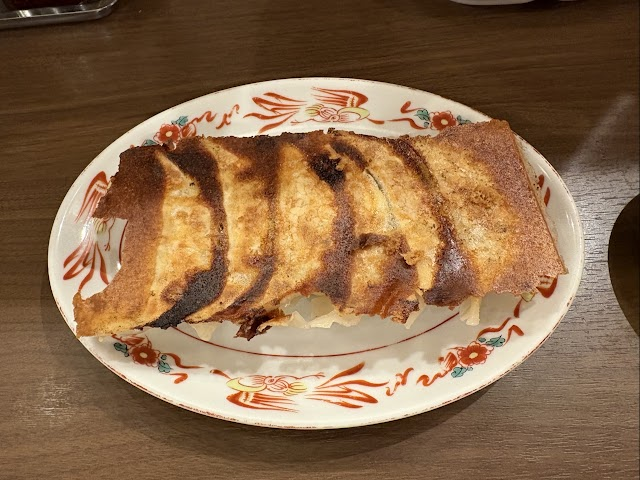
| 営業時間 | 月・火・水・木・金・土・日 10:00〜21:00 |
|---|---|
| 定休日 | なし(要最終確認) |
| 住所 | 栃木県宇都宮市川向町１−２３ パセオ 1F |
| 予約 | 要確認 — ☎ 028-627-8464 ／ 公式サイト |
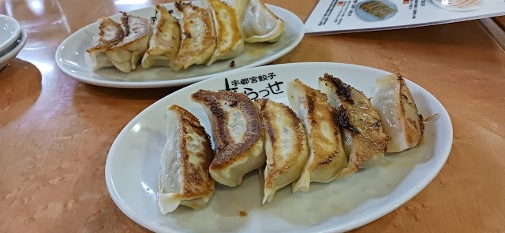
| 営業時間 | 月・火・水・木・金 11:00〜20:00 ／ 土・日 11:00〜20:30 |
|---|---|
| 定休日 | なし(要最終確認) |
| 住所 | 栃木県宇都宮市馬場通り２丁目３−１２ ＭＥＧＡドン・キホーテ ラパーク宇都宮店 地下１階 |
| 予約 | 可 — ☎ 028-614-5388 ／ 公式サイト |
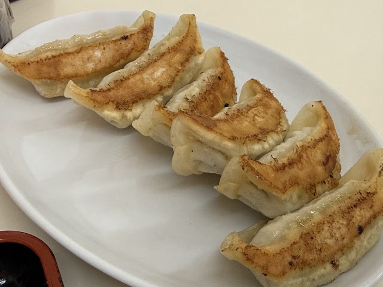
| 営業時間 | 火・水・木・金・土・日 11:30〜14:00, 17:30〜20:00 |
|---|---|
| 定休日 | 月曜 |
| 住所 | 栃木県宇都宮市田下町４５５ |
| 予約 | 要確認 — ☎ 028-652-4455 ／ 公式サイト |
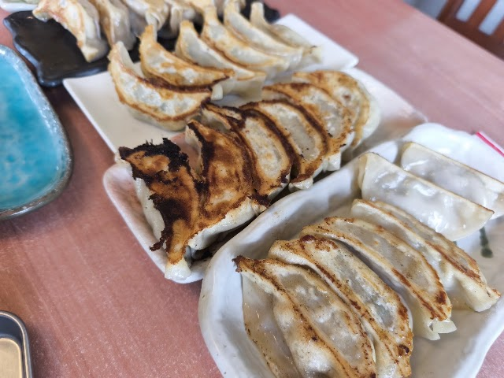
| 営業時間 | 月・火・木・金・土・日 11:00〜18:00 |
|---|---|
| 定休日 | 水曜 |
| 住所 | 栃木県宇都宮市徳次郎町１９０−４ |
| 予約 | 可 — ☎ 028-688-0106 ／ 公式サイト |
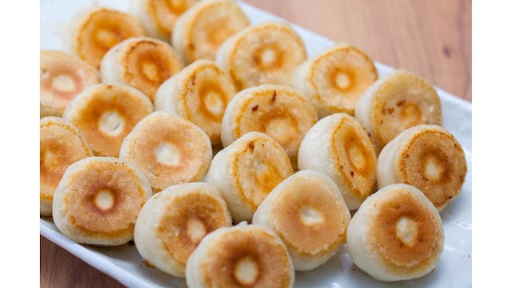
| 営業時間 | 月・火・水・木・金 10:30〜15:00, 17:00〜22:00 ／ 土・日 10:30〜22:00 |
|---|---|
| 定休日 | なし(要最終確認) |
| 住所 | 栃木県宇都宮市池上町１−１１ |
| 予約 | 要確認 — ☎ 050-5304-4597 ／ 公式サイト |
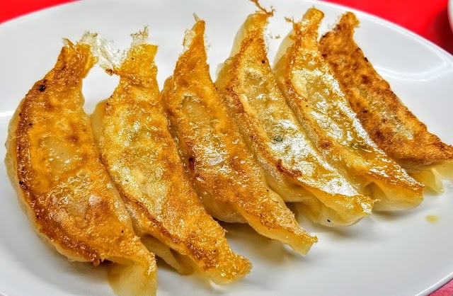
| 営業時間 | 月・火・木・金 11:00〜14:30 ／ 土・日 11:00〜19:00 |
|---|---|
| 定休日 | 水曜 |
| 住所 | 栃木県宇都宮市御幸町１５４−２ |
| 予約 | 要確認 — ☎ 028-663-8131 ／ 公式サイト |
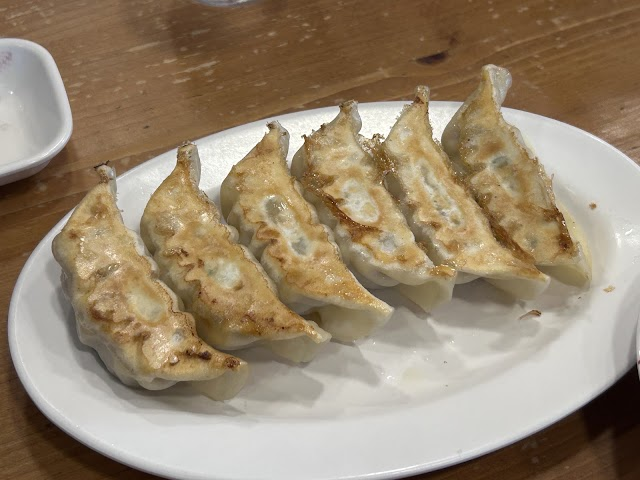
| 営業時間 | 月・火・水・木・金・土・日 10:00〜21:00 |
|---|---|
| 定休日 | なし(要最終確認) |
| 住所 | 栃木県宇都宮市東宿郷１丁目９−１ |
| 予約 | 要確認 — ☎ 028-689-8377 ／ 公式サイト |
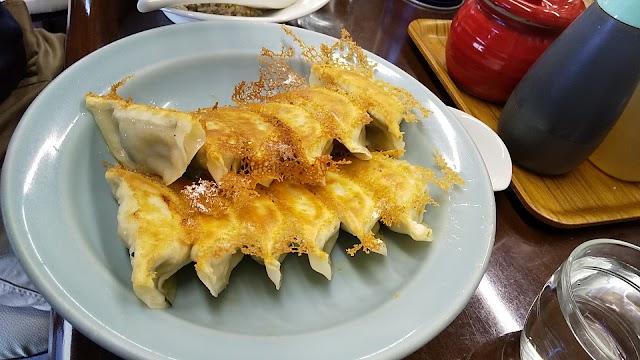
| 営業時間 | 月・水・木・金・土・日 11:30〜20:00 |
|---|---|
| 定休日 | 火曜 |
| 住所 | 栃木県宇都宮市睦町６−１１ |
| 予約 | 要確認 — ☎ 028-678-4155 ／ 公式サイト |
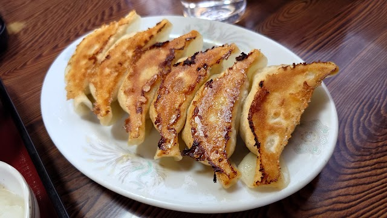
| 営業時間 | 火・水・木・金・土 11:00〜14:00, 17:00〜20:00 ／ 日 11:00〜14:00 |
|---|---|
| 定休日 | 月曜 |
| 住所 | 栃木県宇都宮市越戸４丁目４−３６ |
| 予約 | 要確認 — ☎ 028-663-0947 ／ 公式サイト |
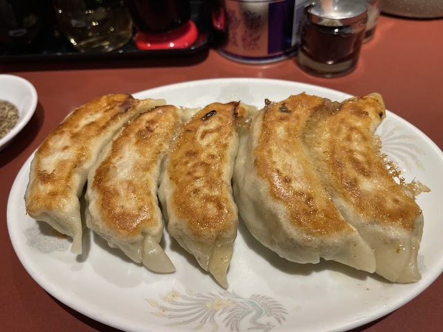
| 営業時間 | 月・水・木・金・土・日 11:30〜14:00 |
|---|---|
| 定休日 | 火曜 |
| 住所 | 栃木県宇都宮市新里町甲甲４５４−５ |
| 予約 | 要確認 — ☎ 028-652-3438 ／ 公式サイト |
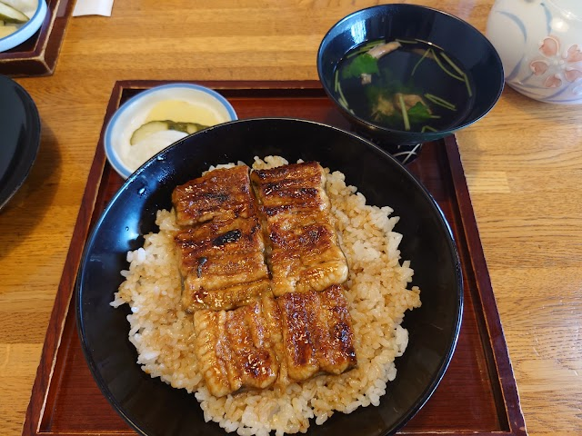
| 営業時間 | 月・火・水・木・金・土 12:00〜13:30, 17:00〜19:30 |
|---|---|
| 定休日 | 日曜 |
| 住所 | 栃木県宇都宮市大通り３丁目３−６ |
| 予約 | 可 — ☎ 028-633-5051 |
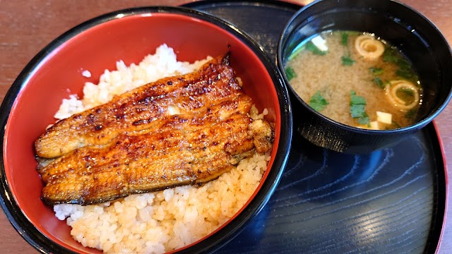
| 営業時間 | 月・水・木・金 11:30〜14:30 ／ 土・日 11:30〜14:30, 17:00〜20:00 |
|---|---|
| 定休日 | 火曜 |
| 住所 | 栃木県宇都宮市中央本町１−１２ |
| 予約 | 可 — ☎ 028-634-3337 ／ 公式サイト |
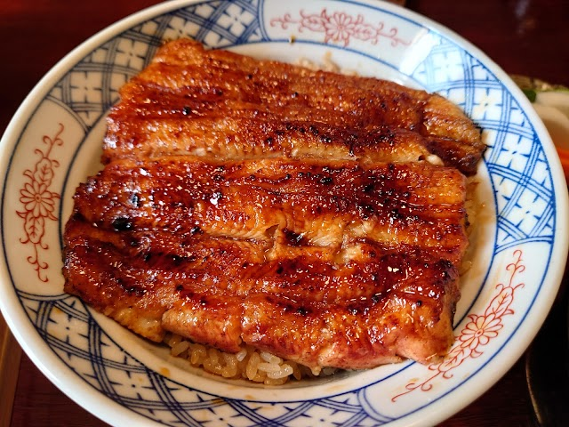
| 営業時間 | 月・火・木・金・土・日 11:30〜13:30, 17:30〜20:00 |
|---|---|
| 定休日 | 水曜 |
| 住所 | 栃木県宇都宮市中今泉２丁目１−１３ |
| 予約 | 可 — ☎ 028-634-6979 |
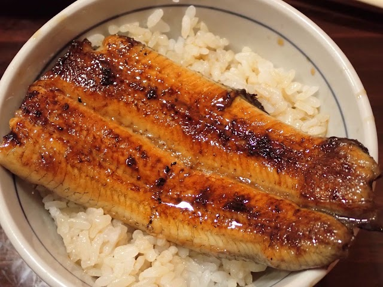
| 営業時間 | 月・火・水・木・金 11:30〜13:30, 17:00〜22:30 ／ 土 17:00〜22:30 |
|---|---|
| 定休日 | 日曜 |
| 住所 | 栃木県宇都宮市泉町２丁目７ |
| 予約 | 可 — ☎ 028-622-9099 ／ 公式サイト |
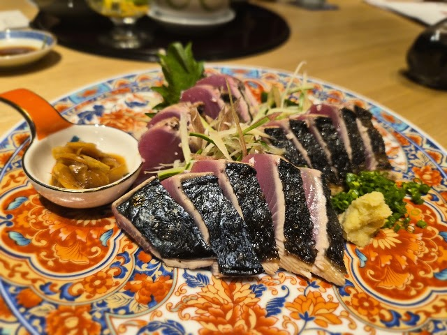
| 営業時間 | 月・火・水・金・土 11:30〜14:30, 18:00〜21:30 ／ 日 11:30〜14:30, 17:30〜20:30 |
|---|---|
| 定休日 | 木曜 |
| 住所 | 栃木県宇都宮市戸祭町３０３１−１ |
| 予約 | 可 — ☎ 050-5486-2362 ／ 公式サイト |
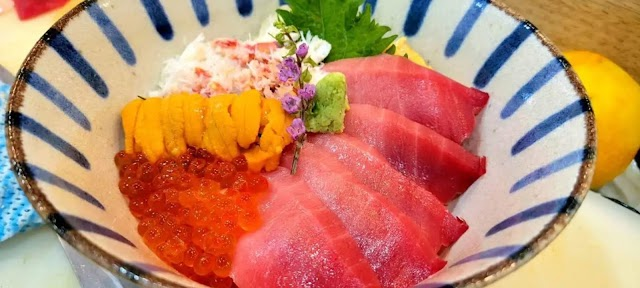
| 営業時間 | 月 17:30〜21:30 ／ 火・水・木・金・土 11:30〜14:00, 17:30〜21:30 |
|---|---|
| 定休日 | 日曜 |
| 住所 | 栃木県宇都宮市宮園町３−６ |
| 予約 | 可 — ☎ 050-5485-2004 ／ 公式サイト |
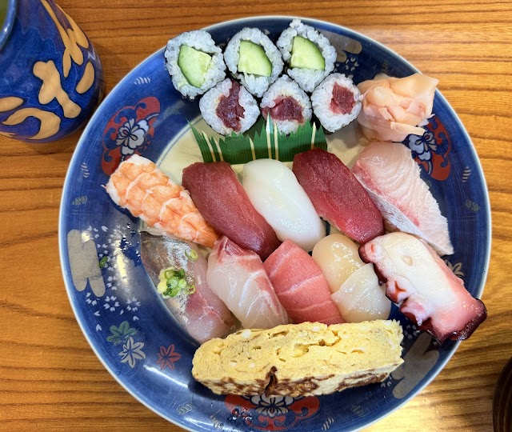
| 営業時間 | 月・火・水・木・金・土 11:30〜13:15, 17:00〜21:00 |
|---|---|
| 定休日 | 日曜 |
| 住所 | 栃木県宇都宮市東宿郷４丁目６−３ |
| 予約 | 可 — ☎ 028-637-1807 ／ 公式サイト |
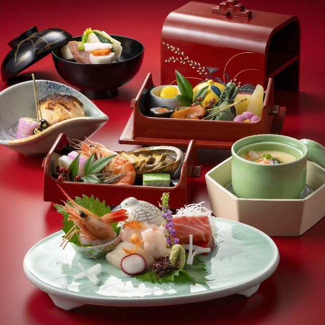
| 営業時間 | 火・水・木・金・土 11:30〜15:00, 17:00〜21:00 ／ 日 11:30〜15:00 |
|---|---|
| 定休日 | 月曜 |
| 住所 | 栃木県宇都宮市本町５−１２ 宇都宮東武ホテルグランデ 2F |
| 予約 | 可 — ☎ 028-643-2178 ／ 公式サイト |
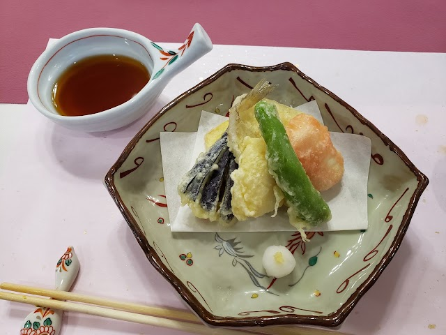
| 営業時間 | 月・火・水・木・金・土・日 11:00〜20:00 |
|---|---|
| 定休日 | なし(要最終確認) |
| 住所 | 栃木県宇都宮市桜３丁目１−５ |
| 予約 | 可 — ☎ 028-635-3119 ／ 公式サイト |
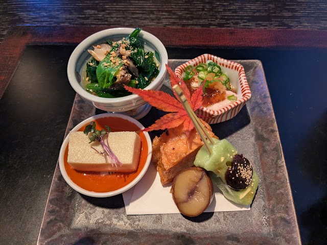
| 営業時間 | 火・水・金・土・日 11:30〜14:30, 18:00〜22:00 |
|---|---|
| 定休日 | 月・木曜 |
| 住所 | 栃木県宇都宮市吉野１丁目７−１０ |
| 予約 | 可 — ☎ 028-611-1711 ／ 公式サイト |
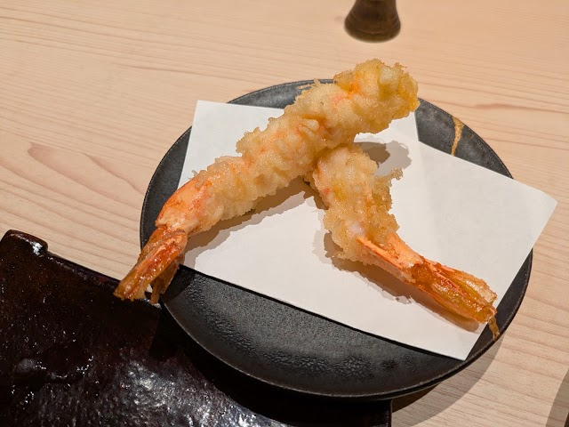
| 営業時間 | 月・火・水・木・金・土 11:30〜14:00, 18:00〜22:00 |
|---|---|
| 定休日 | 日曜 |
| 住所 | 栃木県宇都宮市曲師町４−１ 三笠ビル, 3階 |
| 予約 | 可 — ☎ 090-3579-0480 ／ 公式サイト |
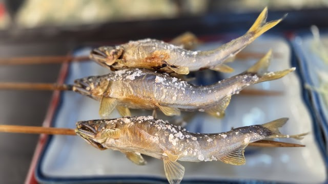
| 営業時間 | 月・火・水・木・金・土・日 10:00〜17:00 |
|---|---|
| 定休日 | なし(要最終確認) |
| 住所 | 栃木県宇都宮市東岡本町２００ |
| 予約 | 要確認 — ☎ 028-673-2031 ／ 公式サイト |
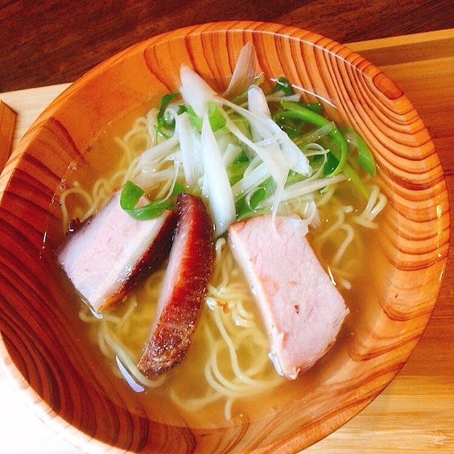
| 営業時間 | 月・火・水・金 11:00〜15:00 ／ 木 11:00〜13:45 ／ 土・日 11:00〜14:30, 17:30〜19:30 |
|---|---|
| 定休日 | なし(要最終確認) |
| 住所 | 栃木県宇都宮市中央２丁目８−６ |
| 予約 | 要確認 — ☎ 028-649-5917 ／ 公式サイト |
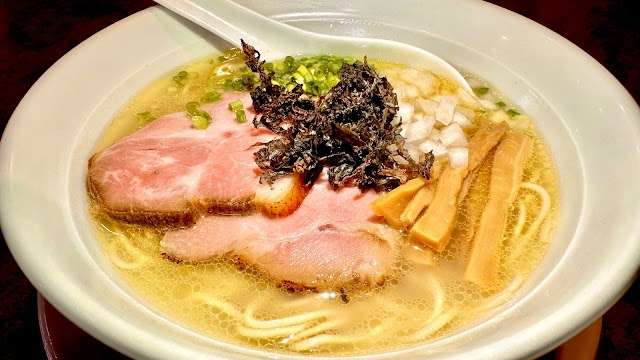
| 営業時間 | 月・火 11:00〜14:00 ／ 水・金 11:00〜14:00, 18:00〜20:30 |
|---|---|
| 定休日 | 木・土・日曜 |
| 住所 | 栃木県宇都宮市清原台３丁目１８−２ |
| 予約 | 要確認 — ☎ 028-678-6339 ／ 公式サイト |
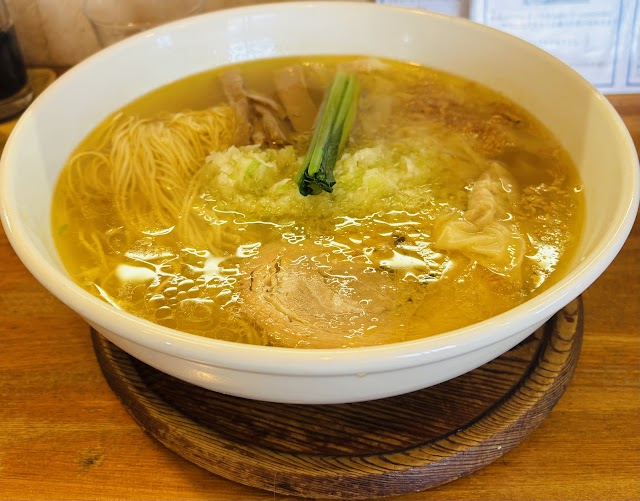
| 営業時間 | 月・火・木・金・土・日 11:00〜14:30, 17:30〜20:30 |
|---|---|
| 定休日 | 水曜 |
| 住所 | 栃木県宇都宮市砂田町３１８−１ |
| 予約 | 要確認 — ☎ 028-656-8270 |
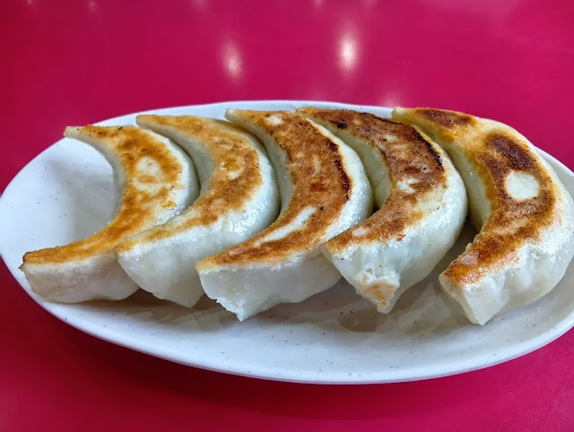
| 営業時間 | 月・水・木・金・土 11:30〜14:20, 17:45〜20:20 ／ 日 11:30〜14:20 |
|---|---|
| 定休日 | 火曜 |
| 住所 | 栃木県宇都宮市宝木町１丁目２８−２０ |
| 予約 | 要確認 — ☎ 028-643-4886 ／ 公式サイト |
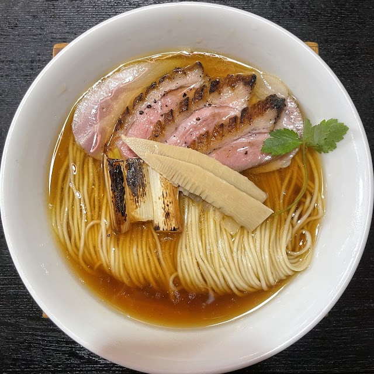
| 営業時間 | 水〜金11:00〜14:00、土日10:00〜14:30 ※売り切れ次第終了 |
|---|---|
| 定休日 | 月曜・火曜、月末の日曜 |
| 住所 | 栃木県宇都宮市徳次郎町４５２−１ |
| 予約 | 要確認 — ☎ 028-305-4418 ／ 公式サイト |
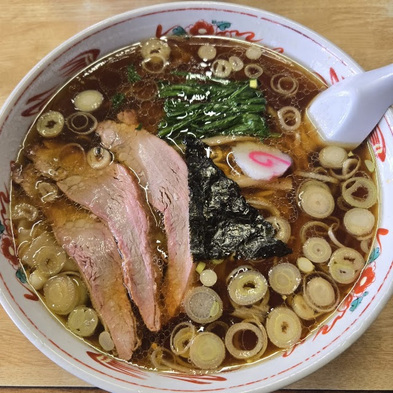
| 営業時間 | 月・火・水・木・土・日 11:00〜19:00 |
|---|---|
| 定休日 | 金曜 |
| 住所 | 栃木県宇都宮市下小倉町９４６−２ |
| 予約 | 要確認 — ☎ 028-674-4551 ／ 公式サイト |
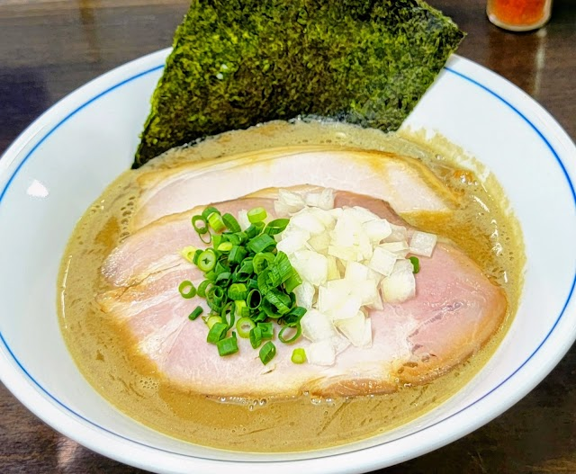
| 営業時間 | 火・水・金・土・日 11:15〜15:00 |
|---|---|
| 定休日 | 月・木曜 |
| 住所 | 栃木県宇都宮市石井町２００９−１ |
| 予約 | 要確認 — 公式サイト |
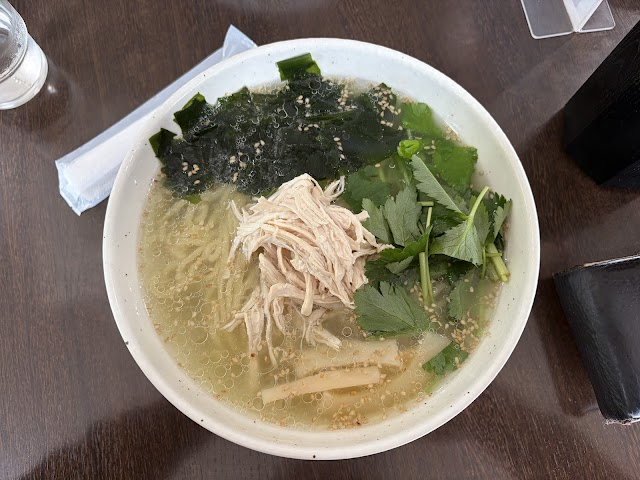
| 営業時間 | 火 11:00〜14:30, 17:00〜20:00 ／ 水・木・金・土・日 11:00〜14:30, 17:00〜19:45 |
|---|---|
| 定休日 | 月曜 |
| 住所 | 栃木県宇都宮市西川田１丁目１６−２９ |
| 予約 | 要確認 — ☎ 028-659-7004 |
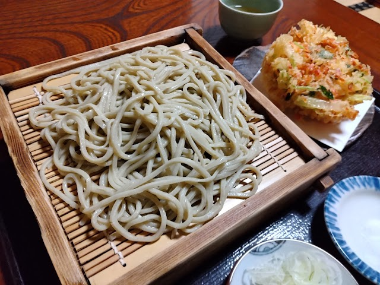
| 営業時間 | 月 17:30〜21:30 ／ 火・水・木・金・土 11:30〜14:00, 17:30〜21:30 |
|---|---|
| 定休日 | 日曜 |
| 住所 | 栃木県宇都宮市今泉１丁目１−１１ |
| 予約 | 可 — ☎ 028-688-8910 |
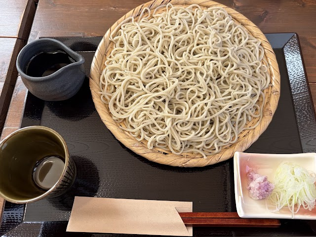
| 営業時間 | 月・火・水・木・金・土 11:00〜13:30 |
|---|---|
| 定休日 | 日曜 |
| 住所 | 栃木県宇都宮市陽東２丁目４−４ |
| 予約 | 要確認 — ☎ 028-680-4349 ／ 公式サイト |
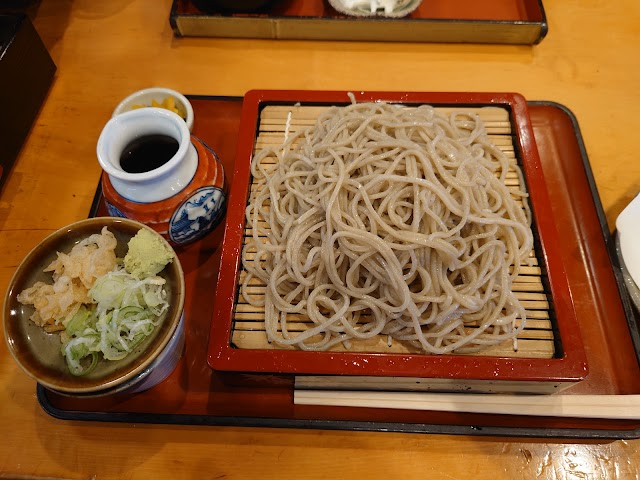
| 営業時間 | 月・火・水・金・土・日 11:00〜14:30, 17:30〜20:30 |
|---|---|
| 定休日 | 木曜 |
| 住所 | 栃木県宇都宮市満美穴町５４９−１ |
| 予約 | 要確認 — ☎ 028-667-3339 ／ 公式サイト |
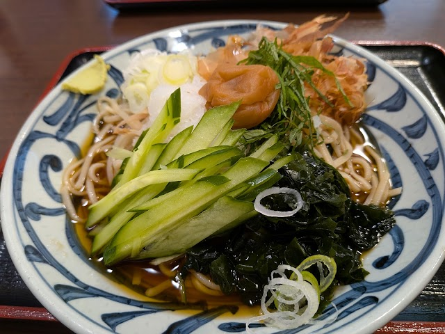
| 営業時間 | 水・木・金・土・日 11:00〜14:00, 17:30〜20:00 |
|---|---|
| 定休日 | 月・火曜 |
| 住所 | 栃木県宇都宮市中戸祭町８６７−３０ |
| 予約 | 要確認 — ☎ 028-621-0301 ／ 公式サイト |
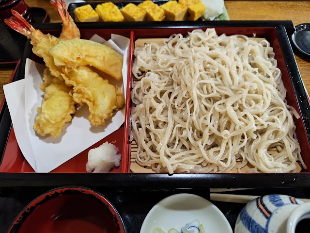
| 営業時間 | 月・火・水・木・日 11:00〜15:00 ／ 金 11:00〜3:00 |
|---|---|
| 定休日 | 土曜 |
| 住所 | 栃木県宇都宮市松が峰１丁目２−６ |
| 予約 | 要確認 — ☎ 028-634-5010 |
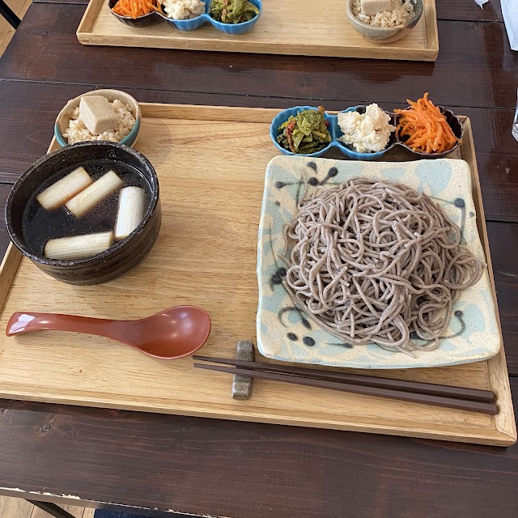
| 営業時間 | 月・火・木・金・土・日 11:30〜16:00 |
|---|---|
| 定休日 | 水曜 |
| 住所 | 栃木県宇都宮市上田原町２０−１ |
| 予約 | 要確認 — ☎ 028-672-3900 ／ 公式サイト |
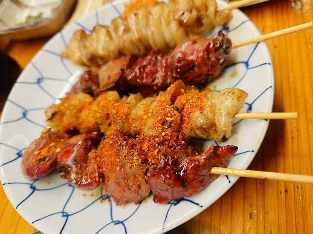
| 営業時間 | 火・水・木・金・土 17:00〜21:30 |
|---|---|
| 定休日 | 月・日曜 |
| 住所 | 栃木県宇都宮市塙田２丁目２−３ |
| 予約 | 可 — ☎ 028-622-3506 |
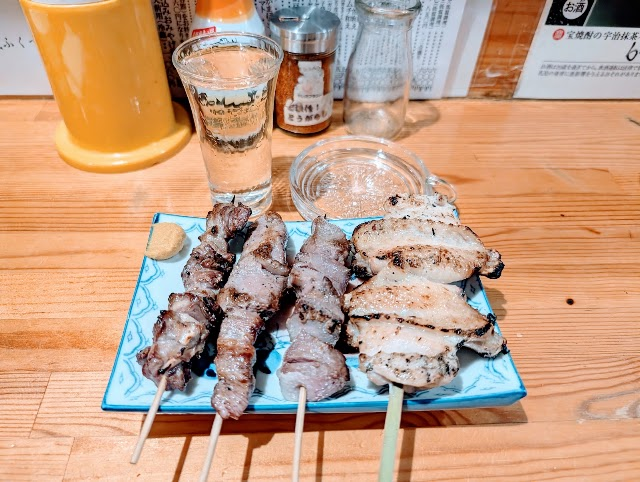
| 営業時間 | 月 17:30〜23:00 ／ 火・水・木・金・土 17:00〜23:00 |
|---|---|
| 定休日 | 日曜 |
| 住所 | 栃木県宇都宮市池上町４−２１ |
| 予約 | 要確認 — ☎ 028-636-8536 |
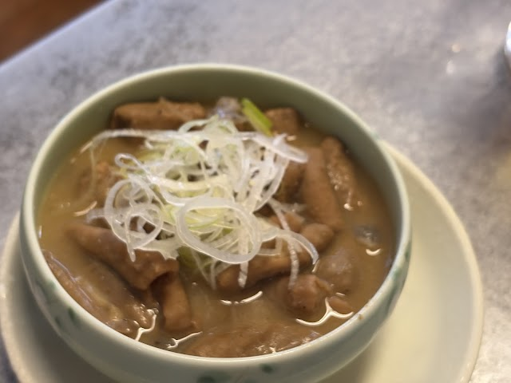
| 営業時間 | 月・火・水・木・金・土・日 11:00〜18:00 |
|---|---|
| 定休日 | なし(要最終確認) |
| 住所 | 栃木県宇都宮市江野町２−８ タテノビル |
| 予約 | 要確認 — ☎ 028-306-2111 |
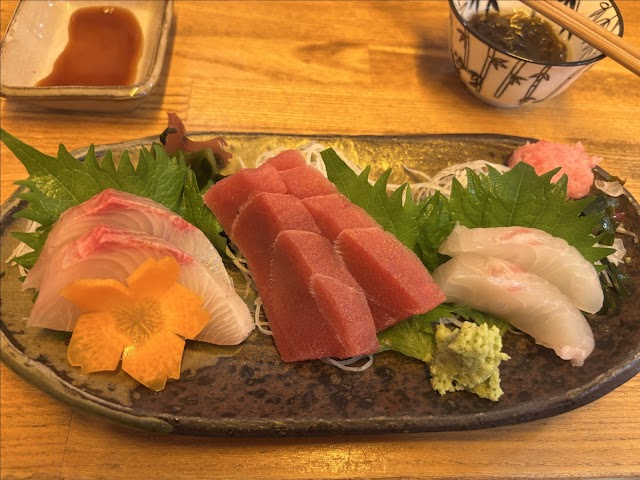
| 営業時間 | 火・水・木・金・土 11:30〜23:00 ／ 日 11:30〜22:00 |
|---|---|
| 定休日 | 月曜 |
| 住所 | 栃木県宇都宮市江野町９−１ ユタカビル 1階 |
| 予約 | 可 — ☎ 028-632-1082 ／ 公式サイト |
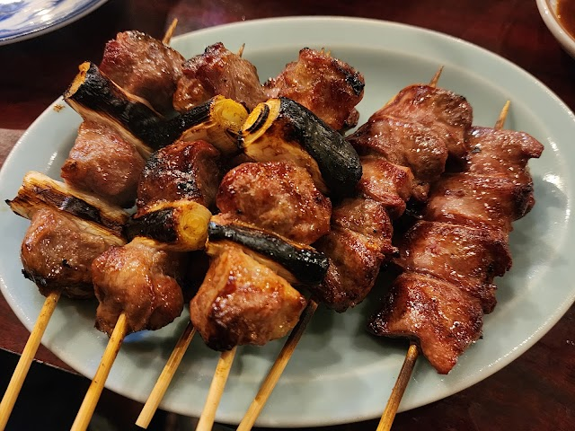
| 営業時間 | 水・木・金 17:00〜23:00 ／ 土・日 14:30〜23:00 |
|---|---|
| 定休日 | 月・火曜 |
| 住所 | 栃木県宇都宮市曲師町６−２ |
| 予約 | 可 — ☎ 080-2061-3536 ／ 公式サイト |
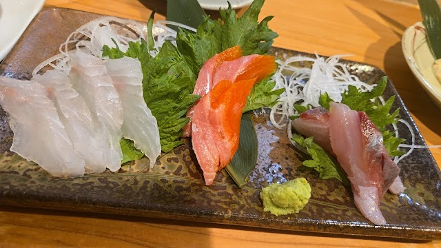
| 営業時間 | 月・火・水・木・金・土 18:00〜22:30 |
|---|---|
| 定休日 | 日曜 |
| 住所 | 栃木県宇都宮市東宿郷２丁目１０−８ |
| 予約 | 可 — ☎ 028-612-8699 ／ 公式サイト |
| 営業時間 | 月・火・水・木・金・土 17:00〜0:00 |
|---|---|
| 定休日 | 日曜 |
| 住所 | 栃木県宇都宮市東宿郷２丁目５−６ |
| 予約 | 可 — ☎ 050-5487-0899 ／ 公式サイト |
| 営業時間 | 月・火・水・木・金・土・日 17:00〜22:00 |
|---|---|
| 定休日 | なし(要最終確認) |
| 住所 | 栃木県宇都宮市駅前通り３丁目６−５ リッチモンドホテル宇都宮駅前アネックス 1F |
| 予約 | 可 — ☎ 050-5485-0478 ／ 公式サイト |
| 営業時間 | 月・水・木・金 17:00〜22:00 ／ 土・日 11:30〜14:00, 17:00〜22:00 |
|---|---|
| 定休日 | 火曜 |
| 住所 | 栃木県宇都宮市雀の宮１丁目１５−１１ |
| 予約 | 可 — ☎ 028-678-9029 ／ 公式サイト |
| 営業時間 | 火・水・木・金・土・日 17:30〜1:00 |
|---|---|
| 定休日 | 月曜 |
| 住所 | 栃木県宇都宮市鶴田町１９９８−５ |
| 予約 | 可 — ☎ 028-648-8007 ／ 公式サイト |
| 営業時間 | 月・火・水・木・金 11:00〜22:30 ／ 土・日 10:00〜22:30 |
|---|---|
| 定休日 | なし(要最終確認) |
| 住所 | 栃木県宇都宮市鶴田町１４５７−２ |
| 予約 | 可 — ☎ 028-680-7224 ／ 公式サイト |
| 営業時間 | 月・火・水・木・金・土・日 18:00〜2:00 |
|---|---|
| 定休日 | なし(要最終確認) |
| 住所 | 栃木県宇都宮市池上町２−１ |
| 予約 | 可 — ☎ 028-635-9281 ／ 公式サイト |
| 営業時間 | 月・火・水・木・金・土 19:00〜22:00 |
|---|---|
| 定休日 | 日曜 |
| 住所 | 栃木県宇都宮市江野町２−６ 高橋ビル ２Ｆ |
| 予約 | 可 — ☎ 028-637-8011 ／ 公式サイト |
| 営業時間 | 月・火・水・木・金・土・日 19:00〜2:00 |
|---|---|
| 定休日 | なし(要最終確認) |
| 住所 | 栃木県宇都宮市江野町１０−２ |
| 予約 | 可 — ☎ 028-636-8760 |
| 営業時間 | 水・木 17:30〜22:00 ／ 金・土・日 11:30〜15:00, 17:30〜22:00 |
|---|---|
| 定休日 | 月・火曜 |
| 住所 | 栃木県宇都宮市西原町３５５４−７ |
| 予約 | 可 — ☎ 028-651-0108 ／ 公式サイト |
| 営業時間 | 月・火・水・金・土・日 11:00〜14:00, 17:00〜21:00 |
|---|---|
| 定休日 | 木曜 |
| 住所 | 栃木県宇都宮市下平出町１４４３−２ |
| 予約 | 可 — ☎ 028-662-3338 |
| 営業時間 | 水・木・金・土・日 11:00〜14:00, 17:00〜21:00 |
|---|---|
| 定休日 | 月・火曜 |
| 住所 | 栃木県宇都宮市今泉４丁目１６−３２ |
| 予約 | 可 — ☎ 028-624-0271 ／ 公式サイト |
| 営業時間 | 月・水・木・金・土・日 11:00〜14:30, 17:30〜22:00 |
|---|---|
| 定休日 | 火曜 |
| 住所 | 栃木県宇都宮市越戸３丁目１５−９ |
| 予約 | 可 — ☎ 028-660-5733 ／ 公式サイト |
| 営業時間 | 月・火・金・土・日 11:00〜14:30, 17:30〜21:30 |
|---|---|
| 定休日 | 水・木曜 |
| 住所 | 栃木県宇都宮市下栗町2937−５ |
| 予約 | 可 — ☎ 028-651-3066 ／ 公式サイト |
| 営業時間 | 月・水・木・金・土・日 11:30〜14:00, 17:00〜21:00 |
|---|---|
| 定休日 | 火曜 |
| 住所 | 栃木県宇都宮市陽東２丁目１６−１６−８ ベルグランドハイツ 1階 |
| 予約 | 可 — ☎ 028-612-3933 ／ 公式サイト |
| 営業時間 | 月・水・木・金・土 11:30〜14:00, 18:00〜21:30 ／ 日 11:30〜15:00, 18:00〜21:30 |
|---|---|
| 定休日 | 火曜 |
| 住所 | 栃木県宇都宮市東宿郷６丁目１−２１ |
| 予約 | 可 — ☎ 028-638-2411 ／ 公式サイト |
| 営業時間 | 水・木・金・土・日 11:00〜16:30 |
|---|---|
| 定休日 | 月・火曜 |
| 住所 | 栃木県宇都宮市江野町１−８ |
| 予約 | 要確認 — ☎ 028-634-8361 ／ 公式サイト |
| 営業時間 | 月・火・水・木・金・土 11:30〜14:00, 17:30〜20:00 ／ 日 11:30〜14:00, 17:30〜19:00 |
|---|---|
| 定休日 | なし(要最終確認) |
| 住所 | 栃木県宇都宮市戸祭２丁目４−８ |
| 予約 | 要確認 — ☎ 028-625-4908 |
| 営業時間 | 月・火・木・金・土・日 11:00〜14:30, 17:00〜21:00 |
|---|---|
| 定休日 | 水曜 |
| 住所 | 栃木県宇都宮市宝木本町１１４０ |
| 予約 | 可 — ☎ 028-665-0910 |
| 営業時間 | 月・火・水・木・金・土・日 11:30〜14:30, 18:00〜22:30 |
|---|---|
| 定休日 | なし(要最終確認) |
| 住所 | 栃木県宇都宮市簗瀬町 簗瀬町837 十日前ハイツ 1F |
| 予約 | 可 — ☎ 028-638-3588 |
| 営業時間 | 月・火・水・木・金・土・日 7:00〜23:00 |
|---|---|
| 定休日 | なし(要最終確認) |
| 住所 | 栃木県宇都宮市駅前通り１丁目５−６ 白木屋ビル 1F |
| 予約 | 可 — ☎ 028-622-3708 ／ 公式サイト |
| 営業時間 | 月・火・水・木・金・土 9:00〜19:00 |
|---|---|
| 定休日 | 日曜 |
| 住所 | 栃木県宇都宮市中戸祭１丁目８−１５ 竹澤マンション1 |
| 予約 | 要確認 — ☎ 028-624-0483 |
| 営業時間 | 11:00〜22:00 |
|---|---|
| 定休日 | 木曜、第3水曜 |
| 住所 | 栃木県宇都宮市東戸祭１丁目２−１ ジェイロフト |
| 予約 | 要確認 — ☎ 028-612-6733 ／ 公式サイト |
| 営業時間 | 火・水・木・金・土 10:00〜18:00 |
|---|---|
| 定休日 | 月・日曜 |
| 住所 | 栃木県宇都宮市氷室町１６４３−１ |
| 予約 | 要確認 — 公式サイト |
| 営業時間 | 月・火・水・金・土 10:30〜17:00 |
|---|---|
| 定休日 | 木・日曜 |
| 住所 | 栃木県宇都宮市錦３丁目１−７ |
| 予約 | 要確認 — ☎ 028-611-3976 ／ 公式サイト |
| 営業時間 | 土・日 11:00〜18:00 |
|---|---|
| 定休日 | 月・火・水・木・金曜 |
| 住所 | 栃木県宇都宮市泉が丘６丁目３−２ 落合店舗 1階 |
| 予約 | 要確認 — ☎ 028-666-7620 ／ 公式サイト |
| 営業時間 | 月・火・水・木・金・土・日 9:30〜17:00 |
|---|---|
| 定休日 | なし(要最終確認) |
| 住所 | 栃木県宇都宮市大谷町９０９ |
| 予約 | 要確認 — ☎ 028-688-8604 ／ 公式サイト |
| 営業時間 | 月・水・木・金・土・日 11:30〜22:00 ／ 火 11:30〜15:00 |
|---|---|
| 定休日 | なし(要最終確認) |
| 住所 | 栃木県宇都宮市昭和２丁目９−２０ |
| 予約 | 可 — ☎ 028-622-5666 ／ 公式サイト |
| 営業時間 | 月・火・水・木・金・土・日 7:00〜19:00 |
|---|---|
| 定休日 | なし(要最終確認) |
| 住所 | 栃木県宇都宮市鶴田３丁目１−４ |
| 予約 | 要確認 — ☎ 028-647-1966 ／ 公式サイト |
| 営業時間 | 月・火・水・木・金・土・日 10:00〜19:00 |
|---|---|
| 定休日 | なし(要最終確認) |
| 住所 | 栃木県宇都宮市下栗町２９３１−４ |
| 予約 | 要確認 — ☎ 028-634-2666 ／ 公式サイト |
| 営業時間 | 火・木・金・土・日 11:00〜16:30 |
|---|---|
| 定休日 | 月・水曜 |
| 住所 | 栃木県宇都宮市江野町１１−６ むぎくら中央ビル 2-A |
| 予約 | 要確認 — ☎ 070-6985-8996 ／ 公式サイト |
| 営業時間 | 月・火・水・木・金・土・日 9:00〜18:00 |
|---|---|
| 定休日 | なし(要最終確認) |
| 住所 | 栃木県宇都宮市上戸祭１丁目１−７ |
| 予約 | 要確認 — ☎ 028-643-1150 ／ 公式サイト |
本ガイドは個人利用目的で作成。掲載情報は2026年8月時点の調査に基づく。写真出典: Google Maps投稿写真(©各投稿者/Google)。